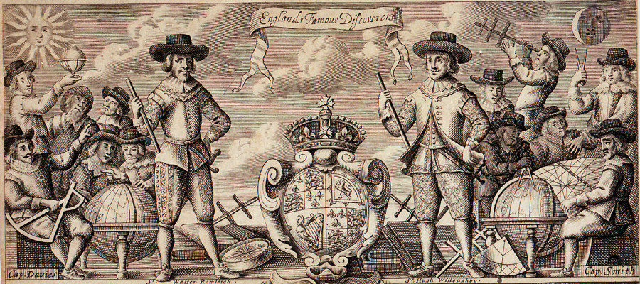
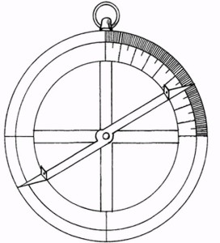
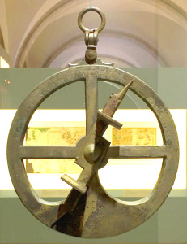
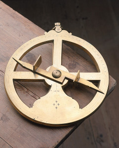
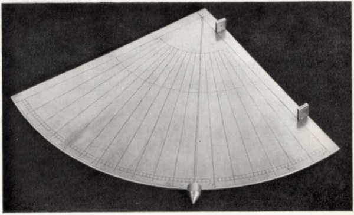
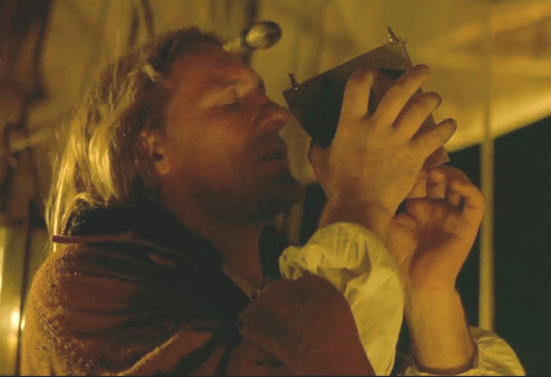
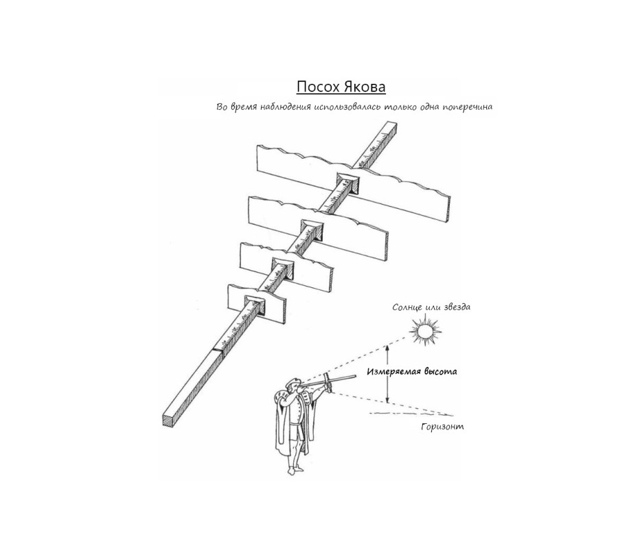

Знаменитые английские мореплаватели (Englands Famous Discoverers. Cap Davies. Sr Walter Rawleigh, Sr. Hugh Willoughby, Cap: Smith) National Maritime Museum, Гринвич, Лондон.
Естественно, в первую очередь на ум приходит астролябия.
Действительно, астролябия появилась в Древней Греции, была усовершенствована учеными Востока, а в Западную Европу проникла еще в XII веке. Для корабельных нужд она была приспособлена, как считается, моряком на португальской службе, уроженцем Нюрнберга Мартином Бехаймом по прозвищу "Богемец". При этом исходят, видимо, из следующего утверждения Сэмюэла Перчеса (Samuel Purchas, мы коротко писали о нем раньше):
After that (the discovery of compass) Henry, sonne of John the First, King of Portugal, began to make voyages of discoverie up on the Coast of Africa, and John the Second seconded that enterprise and used the helpe of Mathematicians, Roderigo and Joseph, his Physicians, and Martin Bahamus by whom the Astrolabie was applyed to the Art of Navigation, and benefit of the Mariner, before used onely in Astronomic"
После этого (открытия компаса) Генрих, сын короля Португалии Жуана I, стал организовывать экспедиции вдоль побережья Африки. Жуан II поддержал это предприятие, прибегнув к содействию математиков Родриго и Йозефа, своих медиков, и Мартина Бахамуса, который применил астролябию, до того использовавшуюся только в астрономии, для искусства навигации на пользу мореходам.
Purchas, his Pilgrimage, 1613, Book I., Chapt. 9.
Однако это не совсем там. Бехайм просто внес изменения в конструкцию прибора, заменив тяжелые и неудобные деревянные части латунными, более подходящими для морских условий. Первое же появление астролябий на борту корабля было отмечено нашим старым знакомым Раймундом Луллием еще в 1295 году. Но его свидетельства почему-то во внимание не принимают, и считается, что на борту корабля морская астролябия появилась в 1481 году. А первое описание способа изготовления морской астролябии и инструкции по применению ее на корабле мы встречаем у Мартина Кортеса де Альбакара в 1551году.
От сложного астрономического прибора в его морском варианте осталось только плоское металлическое кольцо, размеченное в градусах, в центре которого на оси вращалась подвижная линейка (алидада) с двумя визирными мушками. Зачастую вместо одного визира в каждой мушке делали два отверстия разного размера. Одно, меньшее, для случая, когда брали высоту яркого солнца. Если солнце было затянуто облаками, или в случае, когда брали высоту звезды, использовалось большее отверстие.

При измерении углов один наблюдатель держал нить с подвешенной на ней астролябией, другой поворачивал линейку, измеряя высоту светила, а третий производил отсчеты по шкале, нанесенной на диске астролябии.
В музеях порой выставлены под видом морских астролябий небольшие, богато украшенные, почти ювелирные инструменты. Давайте посмотрим, что писал по поводу размера астролябий английский ученый-гуманист и математик Томас Бландевилл (Thomas Blundeville ):
But broad astrolabes though they bee thereby the truer, yet for that they are subject to the force of the wind and thereby ever moving and unstable, are nothing meete to take the altitude of anything, and especially upon the sea which thing to avoid, the Spaniards doe commonly make their astrolabes or rings narrow and weightie which for the most part are not much above 5 inches broad and yet doe weigh at the least 4 pound, and to that end the lower part is made a great deal thicker than the upper part towards the Ring or handle. Notwithstanding most of our English Pilots that be skilfull doe make their Sea Astrolabes or Rings sixe or seven inches broad and therewith verie massive and heavie, not easie to be moved with everie winde, in which the spaces of the degrees be the larger and thereby the truer
Астролябии большого размера, хотя они более точны, все же подвергаются большему воздействию ветра и от этого более подвижны и нестабильны, отчего непригодны для измерения высоты объекта, особенно на море. Чтобы избежать этого, испанцы обычно делают свои астролябии или кольца меньшими по размерам и более тяжелыми, по большей части не более 5 дюймов в диаметре при весе в 4 фунта, при этом нижнюю часть инструмента делают более толстой, чем верхнюю, прилегающую к кольцу или рукоятке. Несмотря на это, наши квалифицированные английские штурмана делают свои морские астролябии диаметром шесть или семь дюймов, очень массивными и тяжелыми, которые не столь легко поддаются воздействию ветра, к тому же расстояние между делениями у них больше, и, следовательно, они точнее.
M. Blundeville, His Exercises Containing Eight Treatiser… (1613)

Морская астролябия, обнаруженная на месте кораблекрушения в Ria de Aveiro, Португалия в 1994 году. Museo de la Marina de Lisboa.
Очевидно, что при малейшей качке наблюдения с помощью астролябии невозможны, и даже при отсутствии качки неточны. В бортовом журнале Колумба имеется следующая запись за 3 февраля 1493 года (на участке возвращения корабля в Кастилию):
Воскресенье, 3 февраля. Этой ночью при ветре с кормы и спокойном, хвала богу, море прошли 29 лиг. Адмиралу показалось, что [Полярная] звезда стоит в небе здесь так же высоко, как у мыса Сан Висенте. Высоту ее он не мог определить ни астролябией, ни квадрантом – мешало волнение.
Х.Колумб Дневник первого путешествия (пер. Яков М. Свет)
Этот и подобные ему случаи показывают, что для использования в море астролябия должна иметь по крайней мере такие размеры и вес, которые описаны Бландевиллом и которые позволяли бы использовать ее в различных условиях погоды и состояния моря.

Морская астролябия,1626 год.
Однако достичь приемлемых результатов, как правило, не удавалось. Не удивительно поэтому, что астролябия не пользовалась особой популярностью у моряков, а если и использовалась. то во время, когда корабль приставал к берегу или находился на якорной стоянке в защищенном от волнения месте.
Параллельно с астролябией на кораблях использовался и другой старинный углломерный инструмент – квадрант. Мореплаватели начали его использовать даже раньше (1460). Так, на титульном листе первого ваггонера (мы уже показывали его раньше) сначала был изображен квадрант, а затем уже астролябия
Титульный лист первого «ваггонера», том 1 (кликабельно)

Морской квадрант, ок. 1600 г.
Квадрант представлял собой изготовленный из дерева или металла плоский сектор с прямым углом и проведенной из его центра дугой, размечанной в градусах. К центру, в котором сходились стороны угла, подвешивали отвес. Одна кромка квадранта снабжалась двумя визирами.
Первыми стали применять квадрант на кораблях португальцы, измеряя высоту Полярной звезды, первоначально в целях определения расстояния от места своего нахождения до Лиссабона. Когда в распоряжении мореплавателей появились первые таблицы солнечного склонения, квадрант стали использовать для определения высоты солнца над горизонтом в градусах. Морской квадрант требовал присутствия двух наблюдателей: один совмещал визиры с направлением на солнце или звезду, второй фиксировал положение отвеса. Точность наблюдений, как и в случае с астролябией, зависела от состояния моря. Несомненным достоинством квадранта по сравнению с астролябией являлось наличие отвеса, т.е. наблюдение можно было вести даже тогда, когда линия горизонта на была видна, ночью или в непогоду. Так, как, например, делал это Депардье-Христофор Колумб в историко-приключенческой драме Ридли Скотта «1492: Завоевание рая»

Использование астролябии и квадранта на кораблях в течение XVII века постепенно сошло на нет. Джон Селлер в своей книге Practical Navigation (1669) даже не упоминает астролябию. Английский мореплаватель Джон Дейвис (1550 – 1605, это он изображен внизу слева на групповом портрете английских мореплавателей, приведенном в начале поста с усовершенствованным им посохом Якова в руках), спустя всего лишь сто лет после Колумба, защищал преимущества посоха Якова (изображен третьим сверху на показанном выше ваггонере) по сравнению с астролябией и квадрантом.
Посох Якова (baculus Jacobi, или Градшток (град-боген), а также radius astronomicus («астрономический радиус»), cross staff (поперечный жезл), virga visoria (зрительная трость); у португальцев и испанцев он был известен как balhestila или ballestilla из-за сходства этого прибора с арбалетом; по этой же причине французы называли инструмент arbalete или arbalestrille), являлся, подобно астролябии и квадранту, одним из первых инструментов, служащих для измерения углов, а следовательно, и определения широты, в мореходной астрономии. Происхождение названия неясно, некоторые производят его от внешнего сходства инструмента с созвездием Ориона, которое на некоторых картах звездного неба в Средние века именовался Иаковом.
Не могу не привести здесь статью из Морского словаря К.И.Самойлова с описанием этого инструмента. Она часто цитируется, однако без указания на источник.
ГРАДШТОК, ГРАД БОК, ГРАД-БОГЕН
(Cross-staff, Jacob's staff) — старинный инструмент, употреблявшийся для измерения высот светил. Г. состоял из деревянного четырехгранного бруска, длиной около 0,9 м (3 ф.), называвшегося флеш (стрела), и продолговатой дощечки — марто (молоток). Марто имело на средине четырехугольное отверстие и надевалось на флеш таким образом, чтобы угол между ними составлял 90°. Таких марто имелось четыре штуки различной величины, принадлежащие соответствующим граням флеша. Грани разбивались на градусы высоты следующим образом: первая — от 40° до 90°, вторая — от 30° до 60°, третья — от 20° до 50° и четвертая — от 10° до 30°. Чтобы взять высоту светила, наблюдатель приставлял глаз к глазному концу флеша и, держа инструмент так, чтобы воображаемая плоскость, проходящая через флеш и марто, находилась бы в плоскости вертикала, двигал марто, добиваясь такого положения, при котором светило было видно по верхнему краю марто, а горизонт — по нижнему. Отсчет высоты светила производился по соответствующей грани флеша, в точке на которой остановилось марто. Г. назывался иначе — краштаф (от английского Cross-staff) или радиус.
Самойлов К. И. Морской словарь. - М.-Л.: Государственное Военно-морское Издательство НКВМФ Союза ССР, 1941

Простота этого инструмента способствовала его широкому распространению в практической навигации, о чем мы можем прочитать в трактате Джона Селлара Practical navigation. С изобретателем посоха Якова история примерно такая же, как с изобретателем компаса: есть много мифов, но ни один из них не подтверждается научными фактами.
Более подробно историю градштока и его усовершенствованных вариантов мы рассмотрим позже. Тогда же опишем такой интересный угломерный навигационный прибор, как камаль. Сейчас же сделаем небольшой перерыв в освещении темы истории навигации XV-XVII вв., чтобы ответить на некоторые вопросы по галерам, которые возникли в последних постах журнала уважаемого
 pro_vladimir.
pro_vladimir.